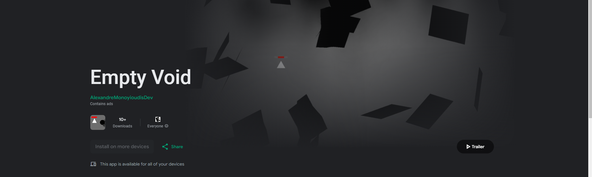

Personal Statement
My ambition is to be a software developer working on challenging, meaningful projects. I'm attracted to the fast pace of innovation in technology and how mathematical solutions and coding can solve simple to complex problems in our world. Lately, I have focused on researching topics in single board computers and other open source such as the Pi hole which acts as a DNS sinkhole that allows me to control all the requests that go through my local network and block out advertisements and malware. I'm eager to gain practical experience in the workplace and expand my skills. Thus, my training route of choice is a BSc Computer Science degree Apprenticeship. I believe this apprenticeship will allow me to learn from the leading experts in this industry and advance my skills further. In my previous work experiences, I demonstrated a high level of proficiency in mathematics, problem solving and coding, as acknowledged by my managers in their feedback.Programming is my passion and how I spend my free time. For instance, I created a game using Unity2D called Empty Void. The game runs efficiently, uses local save files and can be played on android devices. In addition, I created a repository for this game on GitHub and published my applications and programming projects on GitHub. Another project is a calculator (XOcalc) for Crossout, using GitHub I released it so that my friends can download it. I use branches to develop features and store my progress on GitHub. I revel in problem solving and persevere until I have a solution, whether it means teaching myself new programming or researching alternative solutions. I enjoy solving software issues as well as mechanical problems on my drone and 3D printer. Researching various topics such as astronomy, Unity, robotics, 3D Printing and learning new skills is what I like doing. My programming knowledge includes C#, Unity, Python, PyGame, Xamarin Forms, HTML, XAML & CSS additionally I am familiar with VS code and VS. My other projects include Multi-level Game created in PyGame with dialogue with my own pixel art and with a play through lasting around 15 mins, a clicker game created in PyGame has a play through lasting 30 mins, with working save files, an application that can send emails, a space invader style game created in unity 2D. For my A Level project I’m creating a shooter game using Unity 3D (with Unity AI Navigation).
I thoroughly enjoyed my work experiences and received praise for my work. At Sabin Ltd (Data Consultants) I worked as a back-end website developer. Working independently with 2 other students, we converted multiple files into a usable format with pandas and utilised SQL to organise the data into a table, which we used to develop a website with python and HTML. In 2023 at Escape Technology (cloud infrastructure and workflow technology) I worked as a software developer where I created software that can sign into a Sherpa account, view all workstations and their status and send requests to the server to turn stations on and off. These work experiences reaffirmed that a career in software development is where I'd be happiest. A school trip to Silicon Valley was a special treat for me. We visited Intel, Adobe, Google, Apple, Meta and The Tech Museum of Innovation. An interesting presentation was Adobe’s process for software development in particular, coordinating large groups of programmers efficiently.
Through achieving the Bronze Duke of Edinburgh award, I volunteered as a junior martial arts instructor and was in charge of a group of young people. This experience developed my leadership and communication skills. I was also awarded the Chief Scout’s Gold Award (equivalent to another Bronze DofE award). This year I was one of the two founders of the computer science society at my 6th Form. I plan and lead the weekly group, encouraging like-minded students to develop their skills through various tasks and projects. Motivated by my passion for programming, my positive work experience and my developing leadership skills, I am eager to embark on the next step in my journey as a software developer.
Game development
During most of my free time I enjoy developing various projects, most of which are games. In 2023 I created a game called Empty Void and uploaded it to my github. Later in 2024 my interest for this particular game peaked as I added advertisements in my game, which led me to continue working on it. Soon after, I wanted to upload the game to the google play store. I went through a process to find stakeholders, over an number of weeks I fixed many issues and developed a better game with their advice. Eventually, I uploaded it onto google play where my game can now be downloaded by anyone. The game also is able to run advertisements in it using unity ads. This does not make me money but I wanted to practice implementing third party features.
Programming Project
For my computer science A-level I made a game. This project took eight months and documented it